针对科大讯飞股票的分析与投资建议
摘要：本文对科大讯飞股票进行了全面分析并给出投资建议。宏观分析方面，通过对比美国与中国的国民生产总值、汇率、失业率、PMI指数和货币发行量等指标，结合特朗普任期政策，探讨了两国宏观经济环境与金融市场走势及中国政府可能的应对措施，基于此形成了...
摘要：本文对科大讯飞股票进行了全面分析并给出投资建议。宏观分析方面，通过对比美国与中国的国民生产总值、汇率、失业率、PMI指数和货币发行量等指标，结合特朗普任期政策，探讨了两国宏观经济环境与金融市场走势及中国政府可能的应对措施，基于此形成了包含中美股票、债券、黄金及期权的投资组合比例。行业分析中，从生命周期、经济周期敏感度和市场结构等角度剖析AI行业，认为其处于成长期，成熟后可能为低经济周期敏感度行业，虽有垄断潜力但尚未形成极端垄断。科大讯飞作为专注AI的企业，在行业中发展稳中有进。财务分析显示科大讯飞管理者权力较大、注重发展，资产负债表和现金流量表体现出企业规模不断扩大且对经济周期有一定韧性。技术分析表明科大讯飞股票长期呈波动上升趋势，2024年附近上涨显著，技术指标显示股票处于强势区域。小组工作流程借鉴分离定理，考虑政治因素，形成特色投资组合分割方案，特点在于充分考虑政治因素、积极运用课堂知识和融合宏观经济分析。心得体会强调数据解读需结合长短期语境，投资者应运用专业知识分析投资，关注长期趋势以做出理性决策。
关键词：科大讯飞；宏观分析；行业分析；财务分析；技术分析；分离定理；人工智能产业；投资组合
宏观分析
全球环境分析
因为美国拥有世界上最有影响力的金融市场、在特朗普当选后吸引了大量中国投资者涌入，所以在进行全球环境分析时，我们将专注于美国的经济环境，以便于在资产组合中配置适宜份额的美国资产。
1.1.1.国民生产总值
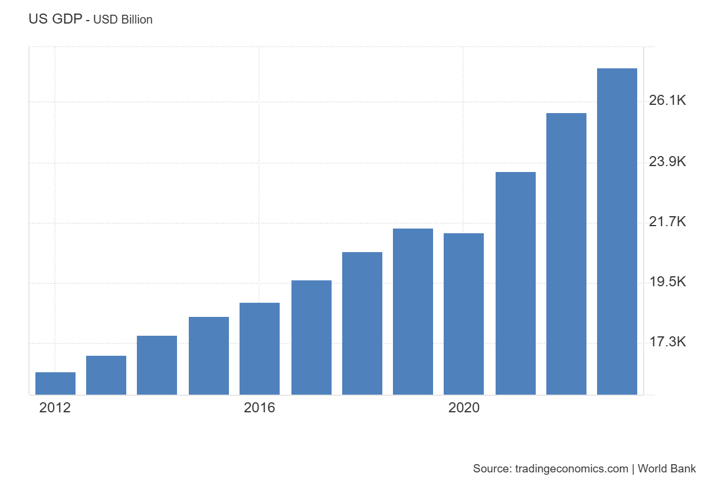
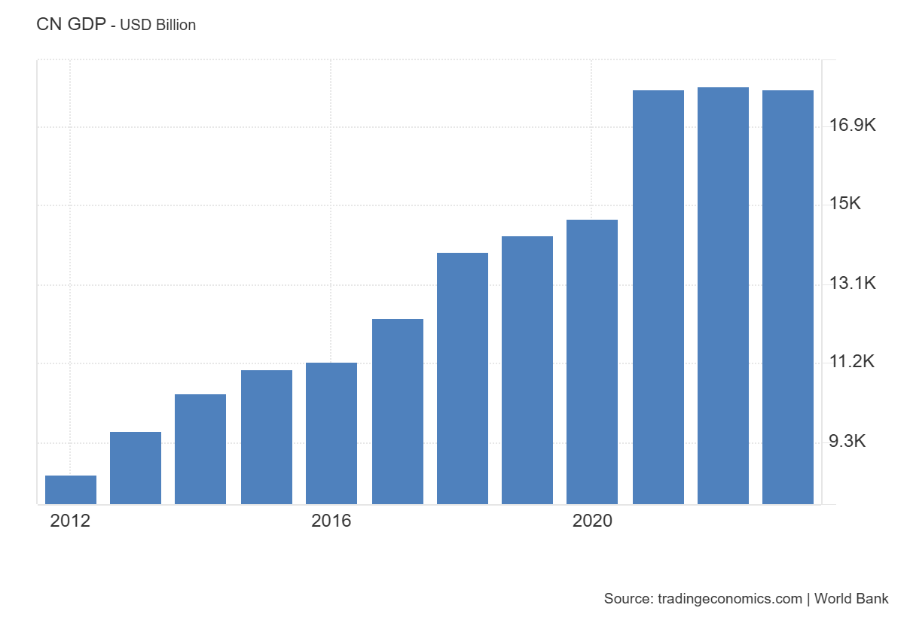
图1-1 美国与中国GDP（2012-2023，美元计价，左为美国，右为中国）
数据来源：tradingeconomics
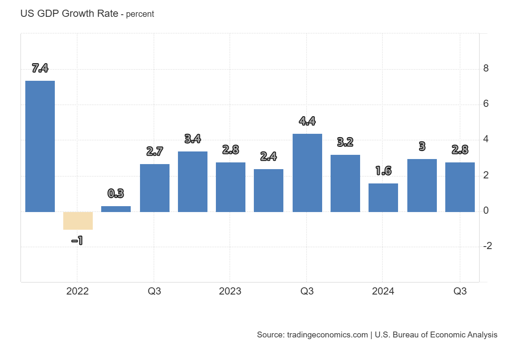
图1-2 美国GDP增长率（2022-2024）
数据来源：tradingeconomics
2020 年疫情冲击后，美国经济在随后三年内逐步恢复活力。与中国近三年美元计价 GDP 发展停滞相比，美国国民生产总值呈明显增长趋势。然而，观察人民币计价的中国国民生产总值可知，疫情结束后其以可观比例增长，恢复显著（中国人民币计 GDP 数据见国内环境分析部分）。
人民币兑美元汇率明显降低可能有两个偶然性因素，这两个因素导致美元计价GDP不能真实反映实体经济的恢复程度。一方面，美国政府在疫情期间投入防疫工作的资金少于中国政府，导致美元贬值程度低于中国人民币。另一方面，美联储在政府印钞振兴经济后有一个习惯，即升息以防止经济过热。
在GDP无法准确反映实体经济恢复程度的情况下，投资者不应过度依赖GDP进行投资决策。从两国疫情后的产业发展来看，虽无明显断层或不同步，但就GDP而言，其对长期投资者决策的参考价值有限。对于短期投资者或投机者，需思考美国升息背后的逻辑：若为防止经济过热，考虑汇率因素后大量投入美国资本可能难以获取理想收益；若为资本回流运动，投资美国市场则时效风险相对较小。总之，在两国经济未出现明显优势方时，投资者购买外国股票可能更多受两国货币汇率影响。
1.1.2. 汇率
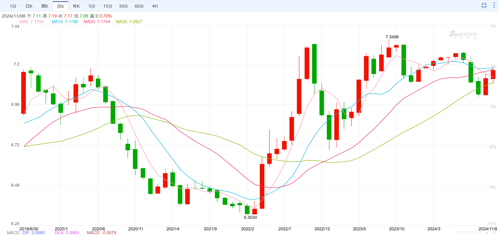
图1-3 美元兑人民币汇率（2019-2024）
数据来源：新浪财经-外汇
汇率影响了美国与中国GDP表现的不一致现象。注意2022年2月后汇率激增，这可能是美元计中国国民生产总值在2022年不增反降的重要原因。后面在针对中国的分析中，我们也会发现中国的整体经济发展是值得乐观的。但是汇率是一个重要的因素，尤其是它的随机性可能在特朗普重新掌权后增强。
特朗普上台对汇率的影响具有不确定性。2016 年特朗普胜选后，美元波动剧烈，体现出其政策前后矛盾。一方面，特朗普政府限制进口、增加关税使美元升值，且共和党执政常伴高利率[1]；另一方面，特朗普秉持’弱美元’理念，要求美联储降息及他国降低美元价值[2]。财联社指出其经济政策矛盾在于既希望美元利于出口又要维持美元主导地位，实质是想减少进口、增加出口，但资本自由流动使此目标难以实现。特朗普本可限制资本流入防止美元升值，却因会先限制就业而不可行。此外，当前面临贸易保护主义威胁，虽然资本保护主义尚遥远，但美籍日裔学者辜朝明指出其对被追赶经济体的作用，这或可解决特朗普政策的内在矛盾。
特朗普本次任期中，投资者在两种情况下可以期待长期内美元价值增加：一种是特朗普正式放弃出口，坚持维持美元霸权；另一种就是特朗普实行资本保护主义，彻底改变我们所熟悉的世界经济与金融格局。
不过在短期内，投资者可以几乎毫无争议地期待美元增值。我们不知道特朗普政府在接下来的四年里会怎么处理美元价值的问题，但关税施加给中国的压力必然是导致美元高涨的。这种影响是否长久取决于特朗普政府的后期政策。
1.1.3. PMI指数（采购经理人指数）
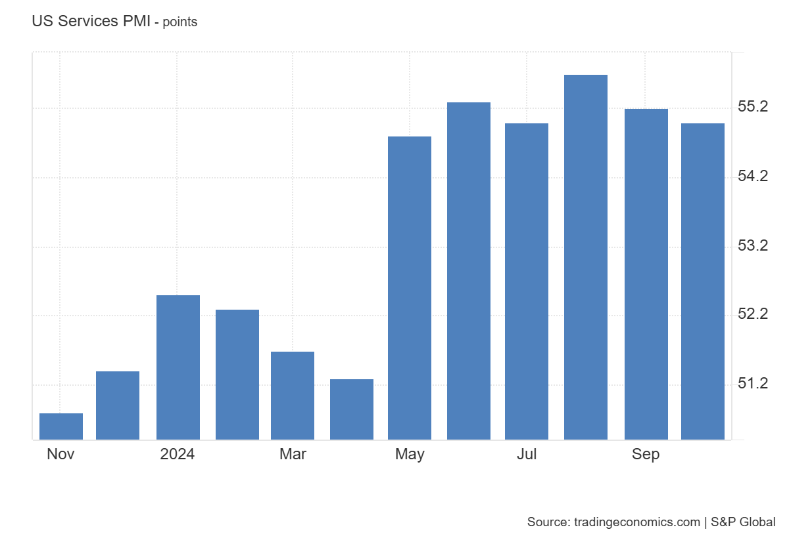
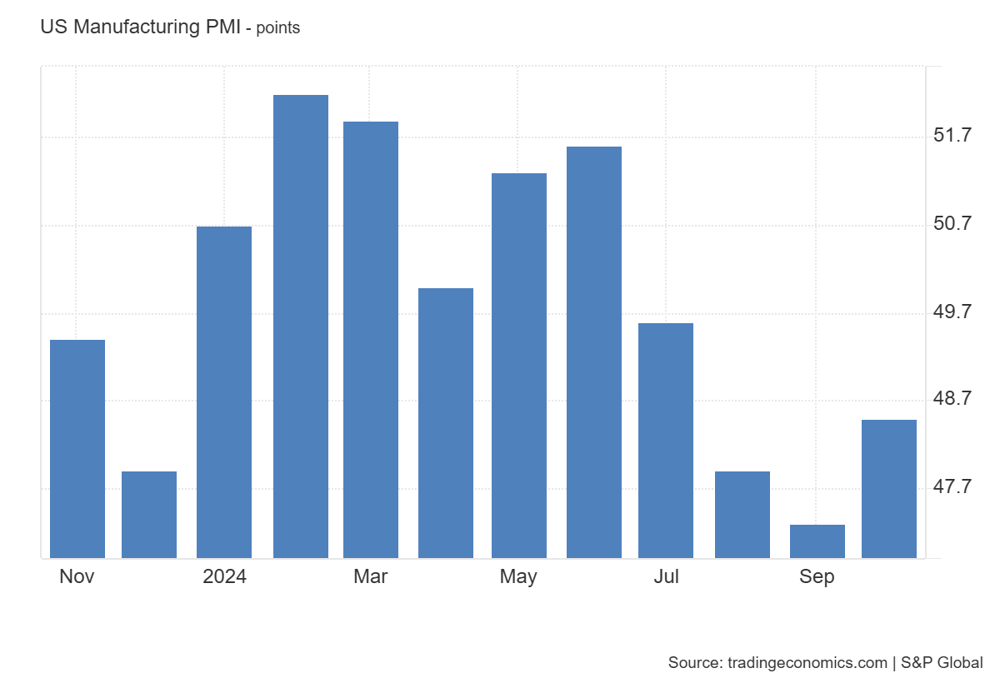
图1-5 美国服务业PMI（2024） 图1-6 美国制造业PMI（2024）
数据来源：tradingeconomics 数据来源：tradingeconomics
美国服务业发展优于制造业。近几月美国的服务业PMI明显较制造业PMI表现较好，与关键值50进行对比，可以看出美国的服务业正在良好发展，而制造业则面临衰退的风险。美国的制造业在世界仍然占据强大位置，但是PMI指数可能预示着美国制造业未来不容乐观的前景。服务业一直都是美国的强项，其发展趋势良好。
1.1.4. 货币发行量
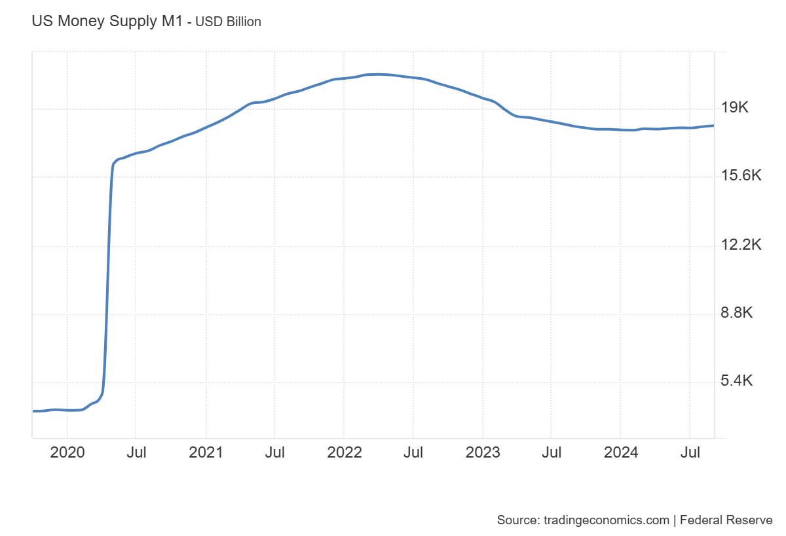
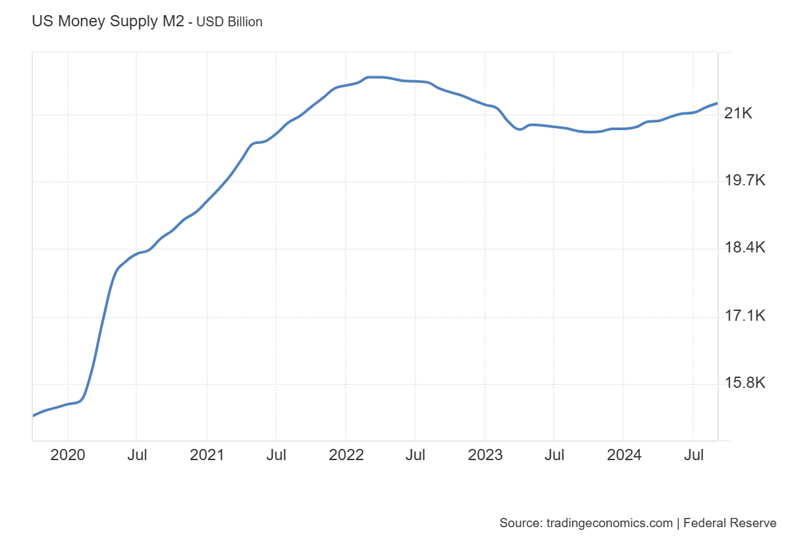
图1-7 美国货币供应量M1（2020-2024） 图1-8 美国货币供应量M2（2020-2024）
数据来源：tradingeconomics 数据来源：tradingeconomics
货币发行量生动地反映了美国在疫情前后的货币政策。2020年货币供应量的激增很明显是疫情期间政府大量支出、振兴经济的效果，2023年货币供应量略有降低，也是美联储防止经济过热的先发制人，但是美国的货币供应量仍然维持在较高的水平上。历史上，2008年美联储投入的大量流动性并没有被收回，这一次则是有明显的回流，这可能是体现了这一任美联储官员对通货膨胀的畏惧，甚至可能暗示资本外流确实是美国经济专家在担心的问题，否则这一次的控制不会如此明显。
北京时间11月8日凌晨，美联储将基准利率下调25个基点至4.50%-4.75%，这是其连续第二次降息，表明通胀预期趋于稳定，政策立场将随着时间推移向中性立场转变。在降息情境下，耐用品、房地产、金融等利率敏感型行业或许会有良好表现。投资者可适度增加在这些领域的投资比例。美联储的此次降息措施似乎与近期偏强的经济、就业和通胀数据存在矛盾，且似乎未重视新当选总统对美国股市的影响。美联储主席杰罗姆・鲍威尔（Jerome Powell）在媒体采访中极力避免过多谈及政治和财政问题，强调大选短期内不会影响货币政策。
- 国内环境分析
1.2.1.国民生产总值
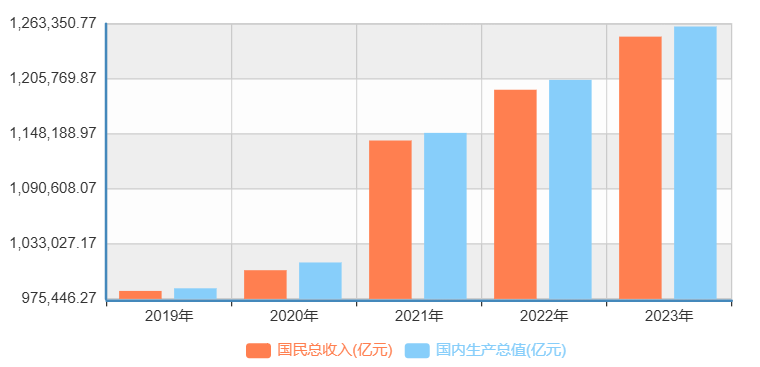
图1-9 中国GDP（2012-2023，美元计价） 图1-10 中国GDP（2019-2023，人民币计价）
数据来源：tradingeconomics 数据来源：国家数据网
中国以美元计价的 GDP 相较于美国表现欠佳，前文分析表明，这是由 2022 年汇率变动所致。然而，以人民币计价时，中国国民生产总值在疫情后不仅实现了恢复，且呈现逐年递增态势，这意味着中国经济总体上处于持续发展阶段。尽管仍在探索过程中，但中国经济已度过最为艰难的时期。
1.2.2. PMI指数
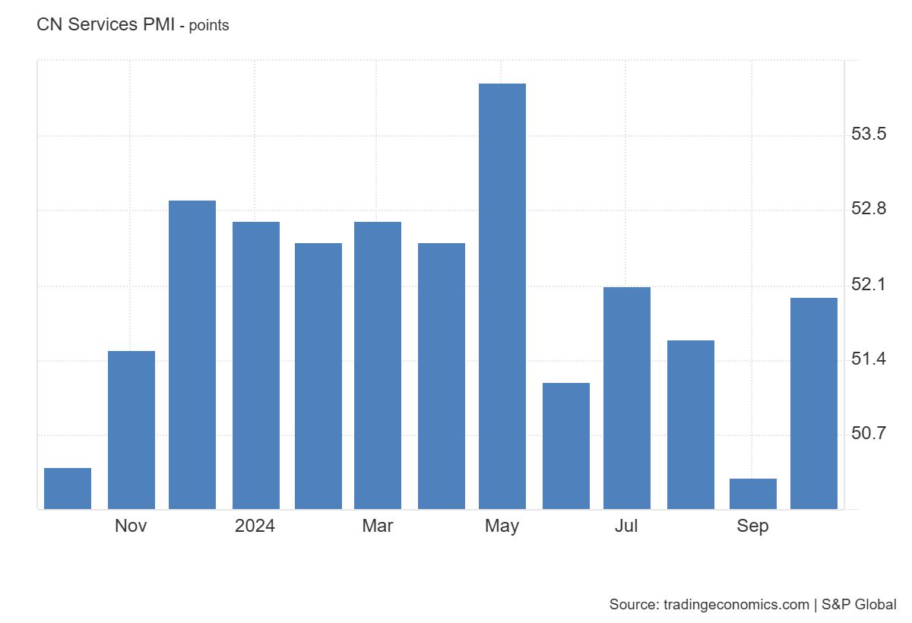
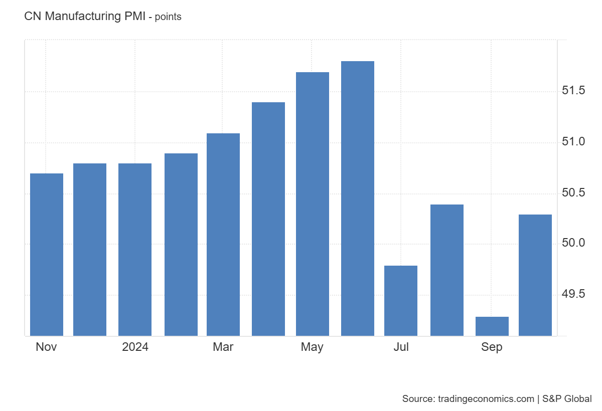
图1-13 中国服务业PMI（2024） 图1-14 中国制造业PMI（2024）
数据来源：tradingeconomics 数据来源：tradingeconomics
中国的制造业和服务业采购经理人指数（PMI）总体较为稳定，通常在 50 以上浮动，这表明中国的制造业和服务业正稳步发展。中国持续推进传统制造业的转型升级，而这一进程与借助人工智能发展新型生产力的设想密切相关。虽后续研究发现中国居民边际消费倾向欠佳，但庞大的人口基数或许足以支撑服务业的持续发展。
1.2.3. 货币供应量
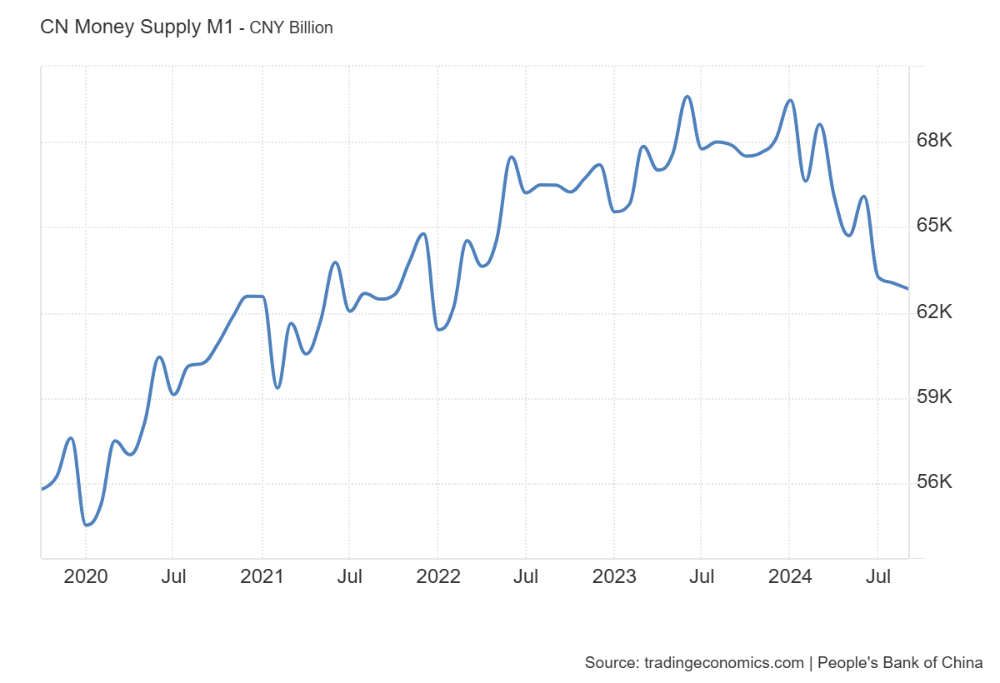
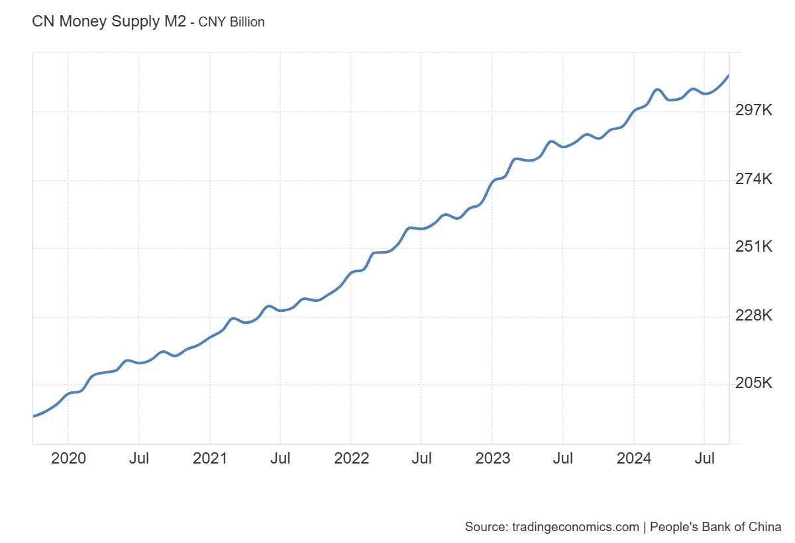
图1-13 中国货币供应量M1（2020-2024） 图1-14 中国货币供应量M2（2020-2024）
数据来源：tradingeconomics 数据来源：tradingeconomics
近年来，中国货币供应量中的 M1 与 M2 发展并不同步，在 M2 持续增长的情况下，M1 波动显著。尽管政府采取了宽松的货币政策，但中国居民较低的边际消费倾向限制了资金的流动。大量的储蓄虽有利于企业发展，但与高失业率现状存在矛盾。这种情况可能是因为部分储蓄来源于企业，疫情后许多企业资产负债表出现衰退，企业急于偿债而未进行借贷和资本积累。同时，东南亚和印度等地区生产成本较低，吸引了投资者，这也对企业的投资行为产生了影响。
- 政府政策
特朗普首任期间的对华经贸政策可以被总结为三点：（1）贸易关税（但是远低于特朗普在2024年上任前承诺的数字）。（2）出口和投资限制。（3）经济制裁和融资限制。这三点政策也是特朗普2024年竞选时关于中国经贸政策的核心观点[4]。
我们认为，特朗普上台后，我国政府的核心政策可能围绕下面几点：
首先，推动我与欧盟等经贸合作，捍卫WTO规则的全球贸易体系。具体可能体现在加大对非美国国家市场的出口，放宽欧洲资本进入中国的条件等措施。中国的投资市场可以吸收的资金将大量来自欧洲。同时，全面加强与东盟、中东的经贸往来，加强与拉美、非洲等”一带一路”沿线经贸合作，持续巩固和扩大中国经贸对外大循环。
其次，研究制定对特朗普对华经贸政策的反制政策组合。针对美国经济的高利率、高通胀、高债务、高财政赤字等问题，利用中国在全球贸易和外汇储备等领域的影响力，及时研究制定对特朗普对华经贸政策的对等反制和反击措施，极端情况下加快抛售美债等，加大其经济衰退或”滞胀”风险。
最后，加强与美国的多议题、多层次、多渠道交流，双方需要就双边关心的议题沟通，也需要在经济、技术、气候变化等全球性议题上保持对话与合作。除了确保官方交流渠道畅通外，还需要通过智库、学术界、商界等渠道推动对话，尽量保持政策可持续性，减少美方对华施压政策的负面影响[5]。
- 经济周期
2020-2022年，中国政府积极应对疫情冲击，实施积极财政政策，如加大基建投资，同时采取宽松货币政策，包括降低利率和增加货币供应量，促使市场资金充裕，企业融资环境优化，经济逐步复苏。2023年，中国经济虽持续恢复但面临挑战。边际储蓄高导致居民消费倾向低，疫情影响居民收入预期，使预防性储蓄增加。同时，新兴产业和高端服务业人才培养与市场需求匹配不足，不过产业升级和结构调整持续推进，如传统制造业智能化转型等，预示经济恢复趋势仍在，资产配置者可考虑加大股票购入，因经济进一步恢复将提升企业盈利。
2020-2022年，美国为缓解疫情冲击，美联储实施量化宽松政策注入资金，政府发放救济金等财政刺激计划增加居民收入、刺激消费，推动经济复苏，市场流动性增强，企业恢复生产。2023年，美国先行指标货币供应量降低，可能是美联储防经济过热之举，历史上货币供应量变动与经济周期密切相关。制造业 PMI 表现不佳，可能源于前期政策调整或形势判断偏差。特朗普上台政策不确定，影响大众预期，增加经济过热可能性。经济过热时，投资大宗商品较好，因其价格与通胀正相关，有望上涨获利。
- 结论
耶鲁大学首席投资官大卫·史文森（David F. Swensen）曾向公众提供过自己的资产配置比例，具体构成如下[6]：
表1-1 大卫·史文森资产配置表
资产类别 目标比例
国内（美国）股票 30%
国外发达市场股票 15%
新兴市场股票 5%
房地产 20%
美国国债 15%
通货膨胀保值债券 15%
从大卫·史文森的投资理念中获得启发，我们尝试利用分离定理并进行创新，将风险型股票与无风险型股票的分类标准换为国内股票及证券、国外股票及证券和期权及黄金三大类型，综合前面的基本宏观分析以及我们对政治局面的理解进行配置。
大卫的投资组合有50%给到了股票，其中30%是美国市场，20%是非美国市场.考虑到无论如何，美国的非出口依赖型行业是可以从特朗普政府中获利的，所以我们提高该数字为35%。然后我们认为中国，尤其是尚未完全从疫情中恢复的中国位于美林时钟的复苏期，所以合理地购买股票也是很有道理的，所以它的权重也有35%。美元相对人民币价值的变化还是可能蛮大的，受中国和美国两国的许多因素影响，而人民币反正不用兑换可以直接用，只受中国通货膨胀率影响，所以我们将分配给债券15%中的2/3给予中国债券，剩下的给美国债券。在前面的对美国经济与美元的分析中，大家也可以看得出来，接下来的日子里配置一个含有美国资产的组合面临很多的不确定性，而在一个不确定性高的金融环境下，黄金、期权就十分重要了，所以我们给予黄金和期权一个较高的比例 - 15%。
下面是我们的宏观层面资产配置表：
表1-2 宏观分析资产配置表
使用分离定理、参考著名投资者的投资组合大大简化了我们的工作。数字金融的发展允许私人投资者进入市场，他们在进行决策时，很可能无法使用复杂是数学原理进行计算，所以我们认为我们的方式对小型私人投资者有一定参考价值。
宏观经济环境对各行业发展具有深远影响，不同行业在经济周期中的表现各异。在此背景下，接下来我将对科大讯飞所在的AI行业进行深入分析，探究其行业特性与发展前景。
- 行业分析
我选择分析的股票来自科大讯飞。科大讯飞是一家专注于AI的信息软件行业公司。我们熟悉的科技公司大多将AI视为一个实验性项目，例如字节跳动的豆包大模型，华为的盘古。但是科大讯飞真正做到了专注AI技术，将AI应用于教育、医疗、城市等场景中。这种专注于AI的大型企业在中国十分少见，近年来在美国等发达国家有出现过少数成功案例。在行业分析中，我将分别就中国和美国市场对AI行业做简单的分析。
2.1.生命周期分析
AI行业处于企业生命周期中的成长期。AI在广义上属于计算机软件行业，但是AI产品和传统软件产品的市场有明显的差别，所以我们将科大讯飞细分至AI行业。中国的AI行业和美国的AI行业均属于成长期。在这一个阶段，稳步增长，竞争较激烈，高于整体经济的发展速度。中国的AI行业都没有出现有潜力改变经济形态的巨大技术突破，导致市场上既都没有形成明显的垄断，也没有企业可以单独凭借AI业务获得惊人的利润。OpenAI在一段时间内确实在向垄断形式发展，但是OpenAI从来没有成为一家优秀的盈利公司。
AI行业似乎越过幼稚期。幼稚期通常有市场垄断、高边际利润和高速增长特征，而 AI行业未现垄断与高利润。一方面，AI依托的计算机技术促进全球网络交流，信息快速流动使先行者优势难存；另一方面，AI发展基于对未来的想象，在未形成垄断前企业就已竞争。经济长期缺乏科技变革，AI有望开启新阶段，大型企业不愿错失机会。然而，目前基础研究进展不足，导致工作重复，宏观上可能走向漫长且收敛的成熟期，毕竟推动经济发展的核心是技术本身而非期望。
2.2.经济周期敏感度分析
AI行业在成熟后可以属于低经济周期敏感度行业。AI行业在成熟后最有可能和计算机软件行业一样，是以扮演社会其他行业助推器的角色而处于经济周期中。AI行业最后也可能会以出租形式销售（对象主要是其他有生产需求的公司），从而避免成为耐用品，免于受到经济周期的限制。同时，也正式由于AI产品可能会成为中间产品，所以它也有可能会受下游行业本身的行业经济周期敏感度影响。好的AI产品拥有高迁移能力，可以缓解这一问题。
2.3.市场结构分析
AI行业和计算机软件行业一样属于极低边际成本行业，这给予了AI行业天生的垄断潜力。事实上，现在已经发展较成熟的计算机软件行业就是垄断最严重的行业之一。法国学者塞德里克·迪朗（Cédric Durand）将这种现象称为”技术封建主义”[7]。
无论在中国还是美国，AI行业尚未形成微软一般的近乎极端的垄断。事实上，在AI行业尚未出现巨大生产力突破的背景下，数不胜数的公司愿意将资金投入AI可能就是在防止这种垄断的出现，或者是使自己能在尚未到来的市场结构清洗中可以占据一个垄断式的，安全的位置。这种对未来垄断的假想最终是一种猜测，大规模、非集中的投资似乎也可以阻止彻底垄断结构的到来。各退一步，也许未来的AI行业是一个充满局部垄断的格局。迪朗预言，计算机软件行业的垄断更像是封建主义而不是资本主义，这会对经济和国民生活造成严重的伤害。
3.财务分析
3.1.资产负债表分析
表3-1 资产负债表（年报，节选重要指标）
2023-12-31 2022-12-31 2021-12-31 2020-12-31 2019-12-31
资产类科目
货币资金 356263.53 434638.49 586993.45 535002.74 382862.56
流动资产 2119991.9 1975746.49 1900184.16 1497809.69 1142993.9
非流动资产 1663120.39 1310167.48 1239219.61 985799.49 867089.71
总资产 3783112.3 3285913.97 3139403.78 2483609.18 2010083.61
负债类科目
流动负债 1290758.25 1208232.57 1165890.04 1039210.74 686583.24
长期借款 455469.21 171410.14 39203.92 8247.48 39759.87
非流动负债 719150.69 392975.03 239789.66 147217.35 150016.77
总负债 2009908.94 1601207.59 1405679.7 1186428.09 836600.01
股东权益类科目
实收资本（或股本） 231537.58 232375.28 232432.52 222473.77 219857.51
未分配利润 536943.19 501233.76 485411.01 376354.57 286660.07
所有者权益 1773203.36 1684706.38 1733724.07 1297181.1 1173483.6
数据来源：巨潮资讯网
科大讯飞是一家管理者权力较大的企业。2023年，其货币资金占总资产的比例约为10%，超过谷歌同年年报所披露的约6%。同时，科大讯飞2023年股东权益相对于负债较少，而谷歌、百度同年股东权益接近负债的两倍。由此可见，科大讯飞专注于企业自身发展，更注重企业发展而非股东分红，这种情况在中国A股市场较为常见，也可能意味着科大讯飞仍处于发展阶段。
科大讯飞是一家发展稳中有进的企业。随着年份推进，科大讯飞的总资产和负债均在增加，代表企业的规模在不断增大。从这里可以看出，科大讯飞还尚未处于成熟期，这与其所处行业在中国的现状形成了呼应。人工智能被认为也可能成为新质生产力中的一员，但它目前还没有真正地实现技术革命性突破、生产要素创新性配置、产业深度转型升级。科大讯飞稳中有进的发展使得我们期待，在企业发展成熟时，它也将可以为投资者带来一个理想的收益。
3.2.现金流量表分析
表3-2 现金流量表（年报）
2023-12-31 2022-12-31 2021-12-31 2020-12-31 2019-12-31
经营活动产生的现金流量净额 34975.78 63076.12 89307.54 227075.49 153146.85
投资活动产生的现金流量净额 -397872.83 -170390.05 -257929.47 -73528.88 -289899.24
筹资活动产生的现金流量净额 282970.44 -31836.77 237878.58 -9517.78 257990.31
数据来源：巨潮资讯网
2019-2023年期间，科大讯飞经营活动现金流量净额呈现下降趋势，这可能是由于主营业务收入减少或现金流入减少，亦或是成本费用增加所致。投资活动现金流量净额历年均为负值，表明公司持续进行大规模投资，其中2023年投资规模最大。筹资活动现金流量净额有正有负，正数代表筹资活动，负数表示偿债或股息分配情况，2023年筹资净额为正且数额较大，显示公司在当年筹集了大量资金。
从现金流量表中可以看出，科大讯飞确实是一个持续发展的企业，特别是在全球经济格局中资产负债表衰退的背景下，它仍能持续投资，显示出对经济周期的一定适应性和韧性。而且科大讯飞也在努力地履行对于投资者的责任，是一家脚踏实地的公司。
4.技术分析
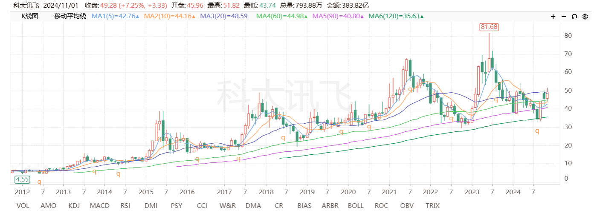
图3-1 科大讯飞股票历史行情（月K）
从长期趋势来看，科大讯飞的股票价格在2012 - 2024年期间呈现出较为明显的波动上升趋势。在这期间，虽然股价有过多次回调，但整体方向是向上的。特别是在2024年附近，股价有一个较为显著的上涨。从移动平均线来看，不同周期的均线（MA1(5)、MA2(10)等）在2024年左右呈现出多头排列的形态，这表明短期内股价有较强的上涨动力。
在技术指标方面，MACD（指数平滑异同移动平均线）在图中显示出在股价上涨时，MACD线在零轴上方且柱状线为正值，这通常意味着股票处于多头市场，买入力量较强。同时，KDJ（随机指标）也在超买区域附近波动，表明股价短期内可能有一定的回调压力，但整体上还是处于强势区域。相对强弱指标（RSI）也维持在50以上的强势区间，显示出股票的强势特征。
成交量在股价上涨过程中起到重要的支撑作用。从图3-1中可以看到，在股价上涨的关键节点，成交量有明显的放大，这表明有较多的资金进入市场推动股价上涨。例如在2024年附近股价上涨时，成交量显著增加，这是一个较为积极的信号，表明市场对该股票的关注度和参与度在提高。不过，如果后续股价继续上涨而成交量未能持续放大，可能意味着上涨动力有所减弱。
通过上面的分析，我们认为可以将科大讯飞股票纳入我们的投资组合。科大讯飞所处 AI行业处于成长期，发展前景广阔且公司专注于AI技术应用，在行业中稳步发展。从财务状况来看，企业规模不断扩大且对经济周期有一定韧性。技术分析显示股票长期呈波动上升趋势，2024年附近上涨显著且处于强势区域。考虑到宏观经济环境，中美经济在疫情后均经历复苏过程且面临不同挑战与机遇，中国经济持续恢复且积极推进产业升级，美国经济则受政策及经济周期影响存在不确定性。但是在持有该股票时，我们要持续观察市场环境，长期关注行业动态、公司财务状况以及宏观经济政策变化，特别是 AI 技术发展趋势、公司盈利增长情况、中美贸易政策及汇率波动等因素，以便适时调整投资策略，实现投资收益的最大化与风险的有效控制。
5.小组工作内容
5.1.工作流程
在尝试构建投资组合时，我们小组使用了分离定理，将投资组合分为国内股票及债券、国外股票及债券、期权及黄金三个版块，利用宏观分析确定三个版块各自占投资组合的比例。
之所以借鉴分离定理，一方面是因为如果使用资产组合理论对多个证券进行分析，需要收集大量的数据和进行及其复杂的数学运算；另一方面则是我国的A股市场属于弱式有效市场，投机性较高，系统性风险对股票价格影响较大，同时，重要国际金融市场如美国市场面临巨大的政治不确定性。传统的分离定理将资产分为无风险资产和无风险资产，从而构成资本资产定价模型（CAMP），我们在其基础上考虑政治因素，形成了具有特色的投资组合分割方案。同时，这允许我们将宏观分析与行业分析及企业分析分隔开，从而提高了效率。
我们的工作流程分为四个部分：其一，宏观分析。由第一组的成员收集国内与国际上各项与投资相关的经济金融指标，综合考虑中国及美国的政治因素，进而确定三大版块各自在投资组合中的占比。其二，国内股票及债券配置。第二组的成员首先分析国内发展态势良好的行业，随后在这些行业中开展企业分析，筛选出拟纳入资产配置的股票。在此过程中，我们重点对贵州茅台（烟酒行业）和比亚迪（新能源汽车行业）两家企业的股票进行分析。其三，国际（美国）股票及债券配置。第三组的成员先剖析美国发展较好的行业，接着在这些行业中进行企业分析，挑选出用于资产配置的股票。其中，着重分析Palantir（人工智能行业）和Amicus Therapeutics（生物科技行业）两家企业的股票。其四，黄金及期权配置。
在收集完资料后，四个部分的负责成员分享信息，在第二次会议中确定了最终的投资组合。
5.2.特点分析
首先，我们小组充分考虑了政治因素。我们认为政治因素在宏观分析中应受重视，一是特朗普当选后美国对华态度强硬，加大我国证券市场系统性风险；二是辜朝明等学者提出的资本保护主义概念，我国对此尚未充分准备，这使政治因素成为金融风险，如威廉夏普论文中风险与无风险资产的区别。但幸运的是，我们可利用对美国新政府的了解制定策略。尽管金融市场和宏观经济最坏情况可能难以避免（如技术封建主义或者资本封闭主义），但并非不可预见。
其次，我们对课堂知识进行了理解以及创新。我们没有足够多的数据进行严谨的属性定量分析，但是使用分离定律帮助我们简化了问题，这对于许多的尝试自主构建投资组合的投资者来说有一定启发。同时我们也不想纯粹构建一个指数基金出来，因为我们希望充分发挥自己的主观能动性，同时在一个弱有效市场中，指数基金未必是一个足够好的选择。
最后，我们融合了大量宏观经济的分析。查找参考文献时，为确保时效性，我们有时会牺牲来源可靠性，引用了许多非学术平台和非学者的资料。筛选过程中发现不少文章宏观经济知识欠缺且情绪化严重。例如分析中国2022-2023年美元计价GDP表现不佳时，常归咎于美国”统计魔法”而非汇率，错失重要讨论点；形容特朗普政策’既要又要’也不准确，他是忽略汇率调节机制而非无逻辑。因此，我们更多运用专业宏观经济学理论分析现象，提供合理理论以更好指导投资者。
6.心得体会
6.1.数据的使用
相同数据在不同语境下的解读结果存在显著差异，尤其在长短期视角下表现更为突出。以美国失业率数据为例，若仅关注2024年左右的数据，会发现美国失业率保持在相对稳定水平；然而从长期来看，美国失业率呈现周期性波动（相较于中国失业率的不规则性更为明显），这揭示了短期数据可能掩盖的真实情况，暗示美国可能长期采用通货膨胀或其他措施来换取短期失业率的下降（鉴于失业率周期与经济周期并不完全重合，且失业率周期相对较短）。再看美国货币发行量数据，2023年左右的小幅下降在短期内可被视为美联储防止经济过热的常规举措，但置于多年数据中审视，此次发行量降低幅度较大（特别是与 2008 年金融危机时期相比），似乎表明美联储不仅致力于防止流动性过剩引发的通货膨胀，还有可能试图借机回收部分资本。
6.2.对专业课知识的运用
作为具备专业知识的投资者，必须清醒认识到非理性狂热可能导致高位接盘风险。投资决策需深入剖析盈利可能性及原因。政治与金融领域本质上是动态博弈过程，任何政策或现象均与投资决策紧密相关。然而，单纯依赖孤立信息极易误导决策，必须深入研究长期影响及他人行为。除非独立投资者或小型资金管理者能够超越大型投资机构的信息处理能力，否则不应期望短期独立现象能助力跑赢市场，而应依靠对长期均衡状态的探寻，以把握投机性强市场的核心趋势，进而做出理性决策。****
参考文献
[1]管涛 .特朗普若重返白宫，强势美元会逆转吗[N].第一财经,2024-06-17
[2]赵颖 .以史为鉴：2016年特朗普胜选后，美元怎么走？[N].华尔街见闻,2024-10-24
[3][美] 辜朝明 被追赶的经济体：发达经济体如何理解与应对新现实挑战[M].徐忠，任晴，译. 北京: 中信出版集团, 2023.
[4]韩俊禹 .特朗普当选后对华经贸政策及影响分析[N].腾讯网,2024-11-06
[5]陆岑 .学者调查|美国政策特朗普化前瞻及中国应对策略[N].腾讯网,2024-10-31
[6][美] 大卫·史文森 非凡的成功：个人投资的最佳策略[M].陈彤等译. 北京: 中国人民大学出版社, 2020.
[7][法] 塞德里克·迪朗 技术封建主义[M].陈荣钢译. 北京: 中国人民大学出版社, 2024.